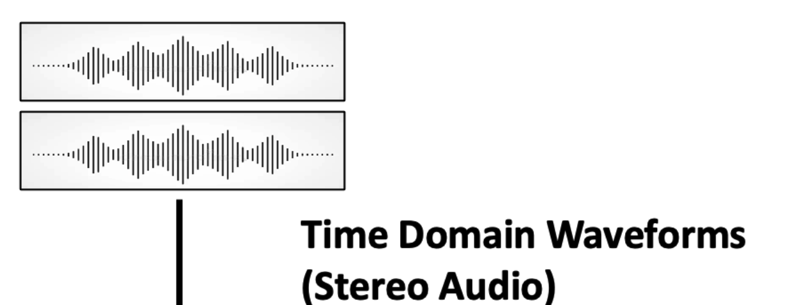
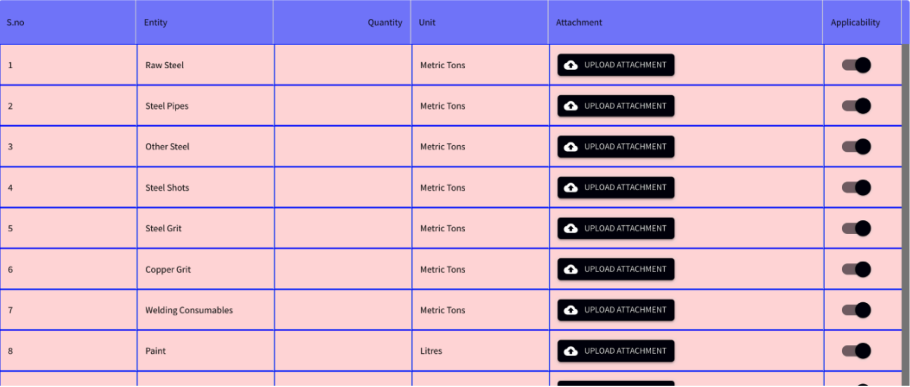
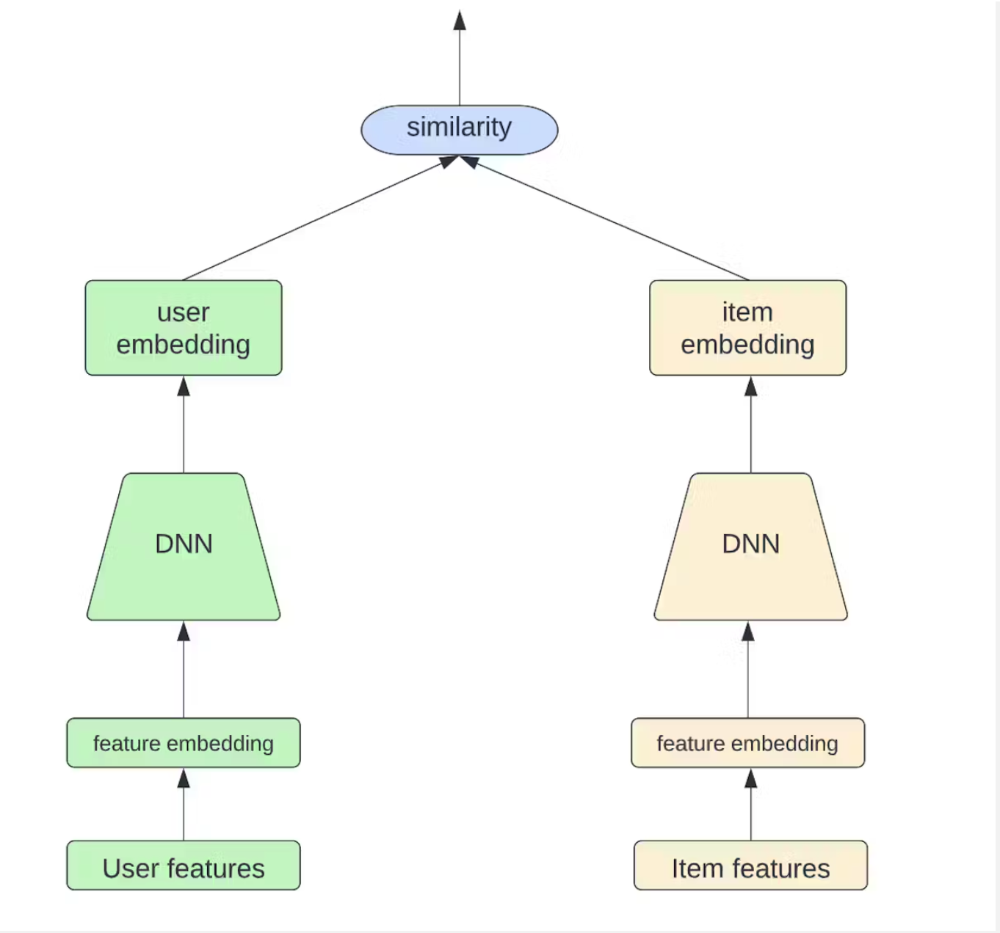
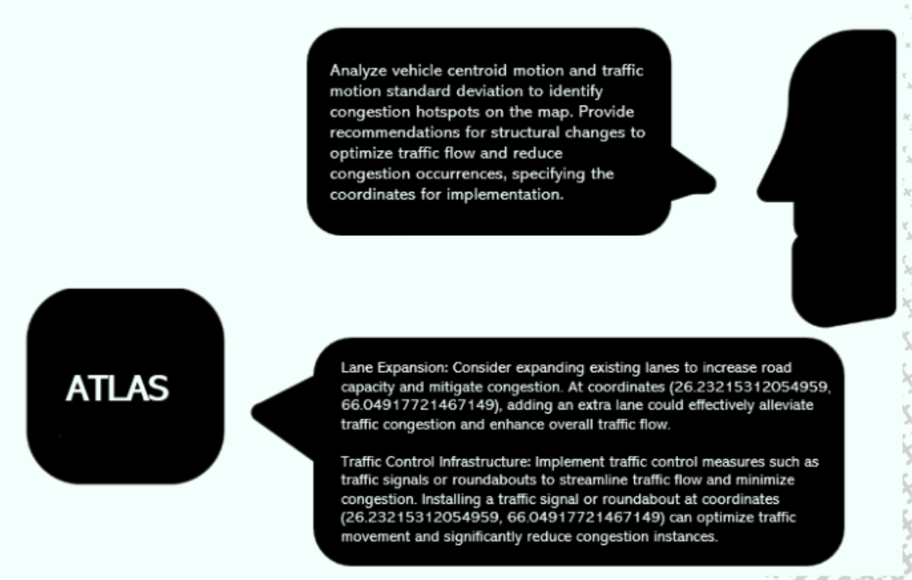

About Me
I am a final-year Computer Science undergraduate at Nanyang Technological University (NTU), Singapore, thankful to be supervised by Dr. Chng Eng Siong and Dr. Rao Wei on my FYP in avian acoustic monitoring. I am also currently working with Dr. Alvin Guo Wei Chan as Research Assistant on large language model hallucinations and creativity.
At Panasonic R&D Singapore, under the mentorship of Srikanth Nagisetty, I developed ReCoOP, a stereo SELD framework that placed 3rd globally in the IEEE AASP DCASE 2025 Challenge. In the MBZUAI UGRIP 2025 program, I worked with Dr. Mohammad Yaqub, Dr. Hu Wang, and Dr. Mostafa Salem on MISFIT, a wavelet-based MRI modality synthesis framework and an end-to-end neuro-oncology pipeline, published in the MICCAI 2025 BraTS Challenge.
Earlier, with Dr. Christopher Ho Tin Lee and Zhao Chenhao, I worked on motor drive control, presenting our ADRC-neural network compensator for PMSMs at the International Conference of Undergraduate Research (ICUR) 2024.
These experiences have shaped my view that reliability and creativity in AI should go hand in hand, and I look forward to exploring new paths at this intersection.
News
-
Our paper received the Outstanding Paper Award at the AI4Research Workshop (AAAI 2026)
-
I will be giving an oral presentation at the AI4Research Workshop (AAAI 2026) on 26 January 2026 for our paper, “Does Less Hallucination Mean Less Creativity? An Empirical Investigation in LLMs
Publications
-
AAAI 2026 Workshop on AI for Scientific ResearchDoes less hallucination mean less creativity? An empirical investigation in LLMs.Oral presentation · Outstanding Paper Award
-
Proceedings of the Workshop on Detection and Classification of Acoustic Scenes and Events (DCASE 2025)
-
Proceedings of the MICCAI 2025 BraTS Challenge
-
Proceedings of the MICCAI 2025 BraTS Challenge
-
Proceedings of the URECA@NTU 2024-25
-
Workshop on Reasoning and Planning for Large Language Models, International Conference on Learning Representations (ICLR 2025)
-
Proceedings of the International Conference on Distributed Artificial Intelligence (DAI 2024), Student Poster Track
-
Proceedings of the URECA@NTU 2023-24 (Orally presented at the International Conference of Undergraduate Research (ICUR 2024))
Internships
-
Jan 2025 - May 2025AI Engineer Intern - Panasonic R&D Center
Built ReCoOP, a stereo SELD system that ranked 3rd globally at DCASE 2025. [GitHub: ReCoOP]
Also developed a Wav2Vec2-based dysarthric-speech detector with a Streamlit app for real-time demos. [GitHub: Dysarthric Speech Detection] -
May 2024 - Jul 2024Data Engineer Intern - Seatrium
Created a full-stack data platform (React, Node.js, PostgreSQL) for 15 shipyards, cutting manual errors and standardizing ETL pipelines. [GitHub]
-
Mar 2024 - Apr 2024NTU veNTUre × Bosch Project
Built a hybrid recipe recommender using NLP and a two-tower model. Applied PCA and K-Means clustering to group recipes and deliver personalized suggestions.
-
Dec 2023AI Intern - Teleskop.Tech
Studied open-source LLMs for a finance chatbot and distilled insights from ~100 sources into feature recommendations for product design.
Projects
-
Aug 2024 - Oct 2024SOPPU - Scalable One PEFT per User (Alibaba Global E-Commerce Challenge)
Built a personalization framework with per-user LoRA adapters and RAG (Qwen2 + ChromaDB). Scaled using compression to halve storage. [GitHub]
-
Mar 2024ATLAS - Adaptive Traffic Learning & Analysis System (NUS-NCS Innovation Challenge)
Built a pipeline that converted OpenStreetMap data into SUMO traffic simulations, added automated flow analytics, and used a Llama model to explain congestion hotspots in plain language.
[GitHub] -
Jan 2024 - Apr 2024CROSS BORDER - Full-Stack Web Application
Built a platform for migrant workers in Singapore with maps, currency, and chat support. Implemented using React/Node, MongoDB, AWS S3, and multiple external APIs.[GitHub]
-
Sep 2023 - Nov 2023Camp Management System - OOP
Created a secure, role-based system for 500+ users with login, session handling, and modular OOP design. [GitHub]